introduction.RmdFirst, the library is loaded:
library(malan)## Loading required package: dplyr##
## Attaching package: 'dplyr'## The following objects are masked from 'package:stats':
##
## filter, lag## The following objects are masked from 'package:base':
##
## intersect, setdiff, setequal, union## Loading required package: tidygraph##
## Attaching package: 'tidygraph'## The following object is masked from 'package:stats':
##
## filter## Loading required package: ggraph## Loading required package: ggplot2For reproducibility, the seed for the (pseudo) random number generator is set:
set.seed(1)A standard Wright-Fisher population can be simulated (hiding progress information) as follows:
sim_res <- sample_geneology(population_size = 10, generations = 10, progress = FALSE)Until pedigrees are build/infered, there is not much information available (e.g. about children). So let us infer the pedigrees:
pedigrees <- build_pedigrees(sim_res$population, progress = FALSE)
pedigrees## List of 2 pedigrees (of size 38, 10)pedigrees_count(pedigrees)## [1] 2pedigrees_table(pedigrees)## 10 38
## 1 1pedigree_size(pedigrees[[1]])## [1] 38pedigree_size(pedigrees[[2]])## [1] 10#pedigree_size(pedigrees[[3]]) # error as there are only 2 pedigreesThe pedigrees can be plotted all at once:
plot(pedigrees)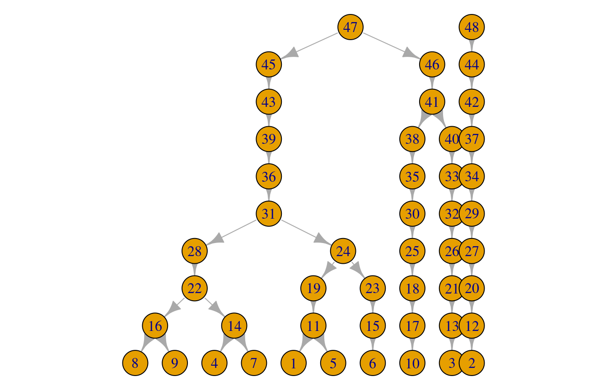
Or just one at a time:
plot(pedigrees[[1]])plot(pedigrees[[2]])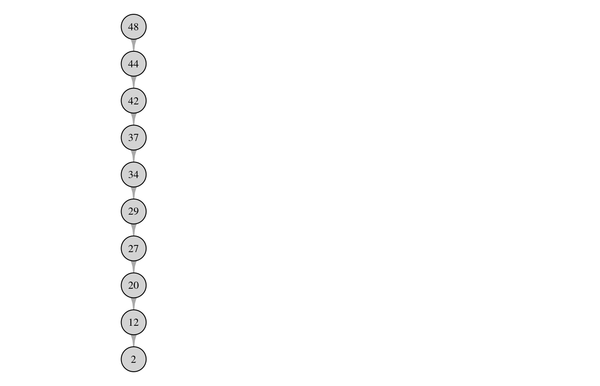
Some information about the population can be obtained. For example, the individuals in the final generation can be saved:
str(sim_res, 1)## List of 7
## $ population :Classes 'malan_population', 'externalptr' <externalptr>
## $ generations : num 10
## $ founders : int 2
## $ growth_type : chr "ConstantPopulationSize"
## $ sdo_type : chr "StandardWF"
## $ end_generation_individuals:List of 10
## $ individuals_generations :List of 23live_individuals <- sim_res$end_generation_individualsAnd a live individual is printed:
print_individual(live_individuals[[1]])## pid = 1 with father pid = 11 and no childrenWe can also print another individual (from the entire population):
indv <- get_individual(sim_res$population, 22)
print_individual(indv)## pid = 22 with father pid = 28 and children (n = 2):
## pid = 16 with father pid = 28 and 2 children
## pid = 14 with father pid = 28 and 2 childrenset.seed(1)
mutrts <- c(0.5, 0.5)
pedigrees_all_populate_haplotypes(pedigrees = pedigrees,
loci = length(mutrts),
mutation_rates = mutrts, progress = FALSE)Individual pedigrees can now be plotted with haplotype information:
plot(pedigrees[[1]], haplotypes = TRUE)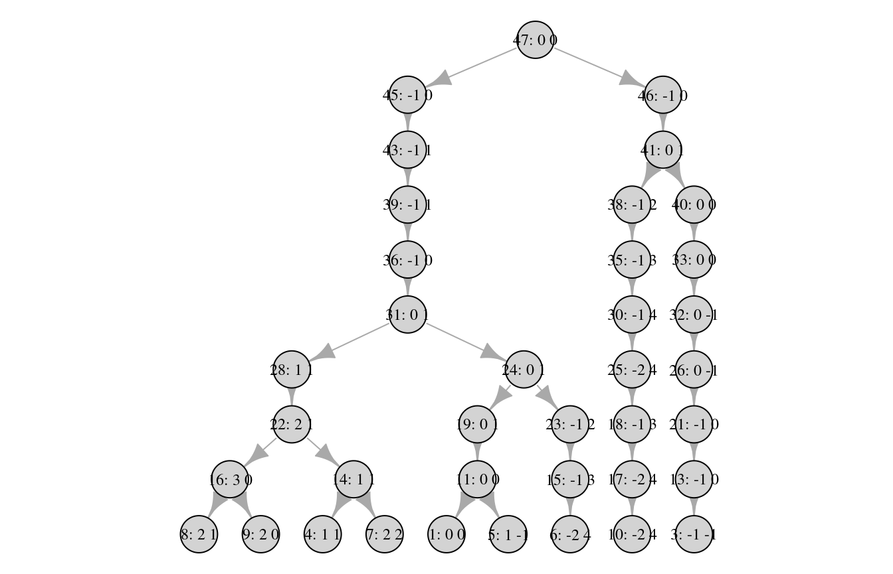
And the individual id can be removed to only display the haplotype:
plot(pedigrees[[1]], ids = FALSE, haplotypes = TRUE)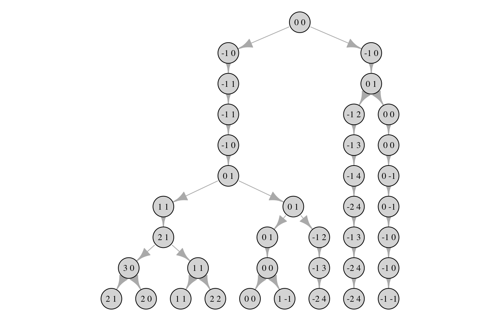
And one or more individuals can be marked/highlighted:
plot(pedigrees[[1]], ids = TRUE, haplotypes = TRUE, mark_pids = c(14, 16))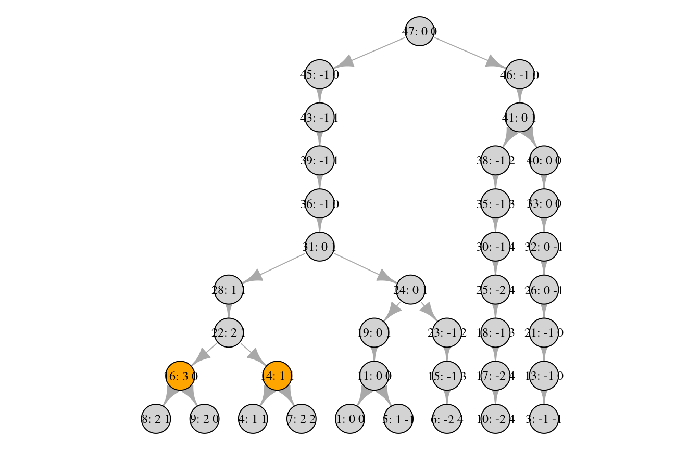
By standard, only the last generation contains \(N\) individuals. If the last 3 generations should be full, this can be done by specifying extra_generations_full = 2 as follows (2 extra as the last generation always has \(N\) individuals):
set.seed(1)
sim_res <- sample_geneology(population_size = 10,
generations = 5,
extra_generations_full = 2,
progress = FALSE)
pedigrees <- build_pedigrees(sim_res$population, progress = FALSE)
plot(pedigrees)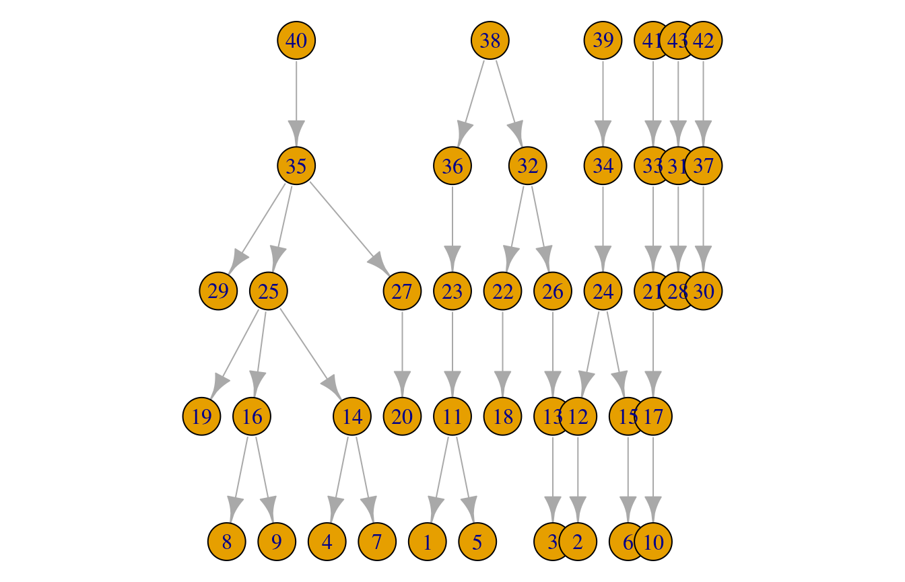
And to obtain the complete history, extra_generations_full is set to generations:
set.seed(1)
sim_res <- sample_geneology(population_size = 10,
generations = 5,
extra_generations_full = 10,
progress = FALSE)
pedigrees <- build_pedigrees(sim_res$population, progress = FALSE)
plot(pedigrees)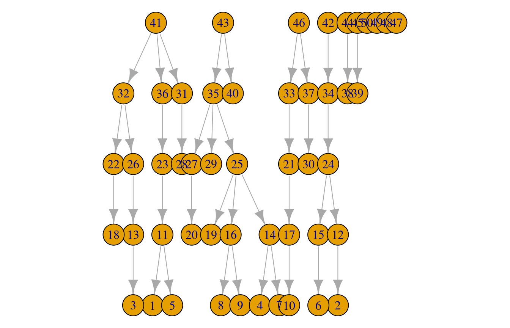
Now, there are 10 individuals in all generations.
By standard, the number of generations are specified. Instead, it can be specified to continue simulating until one common founder is reached by specifying generations = -1:
set.seed(1)
sim_res <- sample_geneology(population_size = 10,
generations = -1,
progress = FALSE)
pedigrees <- build_pedigrees(sim_res$population, progress = FALSE)
plot(pedigrees)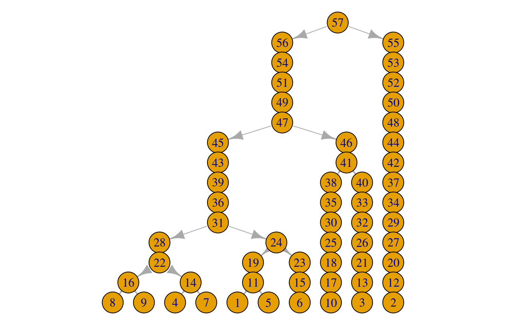
The number of generations needed can be obtained as follows:
sim_res$generations## [1] 15Let’s try to simulate a larger population with 3 full generations (the additional individuals_generations_return is to get all individuals in the last 3 generations returned in the individuals_generations slot, cf. below, and the default value is 2 but is included here for demonstration purposes):
set.seed(1)
sim_res <- sample_geneology(population_size = 1e3,
generations = 200,
extra_generations_full = 2,
individuals_generations_return = 2, # default value
progress = FALSE)And build the pedigrees:
pedigrees <- build_pedigrees(sim_res$population, progress = FALSE)
pedigrees_table(pedigrees)## 311 736 758 2740 407 2464 2565 1421
## 1 1 1 1 1 1 1 1pedigrees_count(pedigrees)## [1] 8So there are 8 pedigrees. Let’s try to plot the largest one:
ped_sizes <- sapply(1L:pedigrees_count(pedigrees), function(i) pedigree_size(pedigrees[[i]]))
ped_sizes## [1] 2740 2565 2464 1421 758 736 407 311largest_i <- which.max(ped_sizes)
plot(pedigrees[[largest_i]])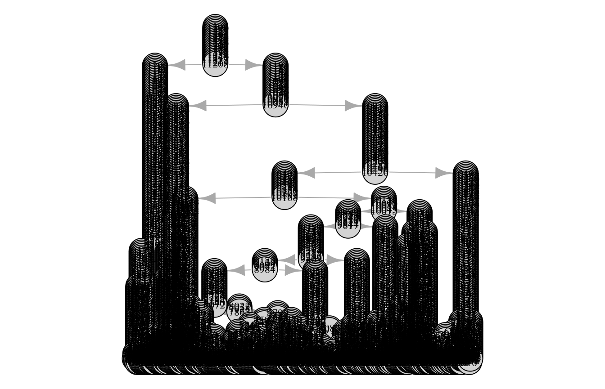
And the impose mutations from a 20 locus haplotype with mutation rate 0.001 per locus:
set.seed(10)
mutrts <- rep(0.001, 20)
pedigrees_all_populate_haplotypes(pedigrees = pedigrees,
loci = length(mutrts),
mutation_rates = mutrts, progress = FALSE)The haplotypes at the live individuals (3 generations) can be inspected:
live_individuals <- sim_res$individuals_generations
length(live_individuals)## [1] 3000haps <- get_haplotypes_individuals(individuals = live_individuals)head(haps)## [,1] [,2] [,3] [,4] [,5] [,6] [,7] [,8] [,9] [,10] [,11] [,12] [,13]
## [1,] 0 0 0 1 0 0 -1 -1 -1 0 0 1 0
## [2,] 0 1 0 0 0 0 0 0 0 1 0 0 0
## [3,] 1 1 0 0 0 0 -1 0 0 1 0 0 0
## [4,] 0 -1 0 0 0 0 0 0 0 0 0 0 0
## [5,] 0 0 0 0 0 0 0 -1 -1 0 0 0 0
## [6,] 0 -1 0 1 0 0 0 0 0 0 0 0 0
## [,14] [,15] [,16] [,17] [,18] [,19] [,20]
## [1,] 0 0 0 0 -1 0 0
## [2,] 0 -1 0 -2 0 0 -1
## [3,] 0 -1 0 -1 0 0 0
## [4,] 0 0 1 0 0 1 0
## [5,] 0 1 0 0 0 0 0
## [6,] 0 0 0 0 0 0 0Lets look at the spectrum:
haps_str <- apply(haps, 1, paste0, collapse = ";")
haps_tab <- table(haps_str)
sort(haps_tab, decreasing = TRUE)[1:10]## haps_str
## 0;0;0;1;0;0;0;0;0;0;0;0;0;-1;-1;0;0;0;0;0
## 140
## 0;-1;0;0;0;0;0;0;0;0;0;0;0;0;0;0;0;0;0;0
## 123
## 0;0;0;0;0;0;0;0;0;0;0;0;1;0;0;0;0;0;0;0
## 120
## 0;0;0;0;0;0;-1;-1;-1;0;0;1;0;0;0;0;0;-1;0;0
## 111
## 0;-1;0;0;0;0;0;0;0;0;0;0;0;0;0;1;0;0;1;0
## 96
## -1;0;0;0;0;0;0;0;1;0;0;1;0;0;0;0;0;0;0;0
## 96
## 0;0;1;0;0;0;0;0;0;0;0;0;0;0;0;0;0;0;0;1
## 92
## 0;1;0;0;0;0;0;0;0;1;0;0;0;0;-1;0;-2;0;0;-1
## 87
## 1;1;0;0;0;0;-1;0;0;1;0;0;0;0;-1;0;-1;0;0;0
## 80
## 0;0;0;0;0;0;-1;-1;-1;0;0;1;0;-1;0;0;0;-1;0;0
## 79spectrum <- table(haps_tab)
spectrum## haps_tab
## 1 2 3 4 5 6 7 8 9 10 12 14 15 16 17 18 19 20
## 51 16 11 10 5 10 4 2 2 3 2 2 4 1 1 1 2 1
## 21 22 23 24 25 26 27 28 30 33 37 38 43 49 51 52 56 58
## 3 1 1 2 2 2 2 1 2 1 2 1 1 3 1 2 1 2
## 68 70 75 79 80 87 92 96 111 120 123 140
## 2 1 1 2 1 1 1 2 1 1 1 1set.seed(100)
Q_index <- sample.int(n = length(live_individuals), size = 1)
Q <- live_individuals[[Q_index]]
Q_hap <- get_haplotype(Q)
Q_hap## [1] 1 1 0 0 0 0 -1 0 0 1 0 0 0 0 -1 0 -1 0 0 0First, identify \(Q\)’s pedigree:
Q_ped <- get_pedigree_from_individual(Q)Now, count matches in pedigree and in live population:
count_haplotype_occurrences_pedigree(pedigree = Q_ped, haplotype = Q_hap, generation_upper_bound_in_result = 2)## [1] 80count_haplotype_occurrences_individuals(individuals = live_individuals, haplotype = Q_hap)## [1] 80We can also inspect pedigree matches information about number of meioses and \(L_1\) distances:
path_details <- pedigree_haplotype_matches_in_pedigree_meiosis_L1_dists(suspect = Q,
generation_upper_bound_in_result = 2)nrow(path_details)## [1] 80head(path_details)## meioses max_L1 pid
## [1,] 28 0 2132
## [2,] 29 0 1692
## [3,] 29 0 1309
## [4,] 30 0 379
## [5,] 30 0 765
## [6,] 30 0 791Look at the distribution of number of meioses between \(Q\) and the matches (there are 0 meioses between Q and himself):
meioses <- path_details[, 1]
hist(meioses)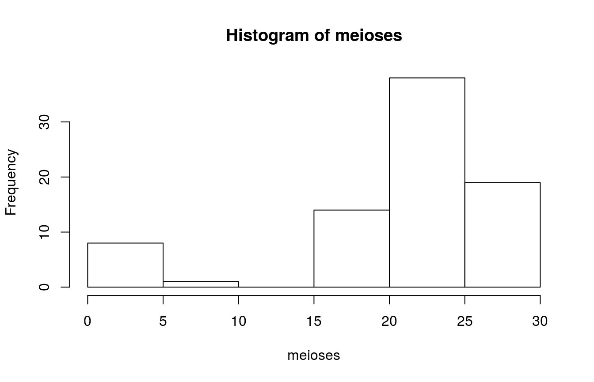
On the path between \(Q\) and the match, the maximum \(L_1\) difference between \(Q\)’s haplotype and the haplotypes of the individuals on the path is recorded (0 means that that no mutations have occured on the path between \(Q\) and the match):
L1_max <- path_details[, 2]
table(L1_max)## L1_max
## 0
## 80mean(L1_max == 0)## [1] 1Draw true contributors:
set.seed(100)
U_indices <- sample.int(n = length(live_individuals), size = 2, replace = FALSE)
U1 <- live_individuals[[U_indices[1]]]
U2 <- live_individuals[[U_indices[2]]]
H1 <- get_haplotype(U1)
H2 <- get_haplotype(U2)View haplotypes:
rbind(H1, H2)## [,1] [,2] [,3] [,4] [,5] [,6] [,7] [,8] [,9] [,10] [,11] [,12] [,13]
## H1 1 1 0 0 0 0 -1 0 0 1 0 0 0
## H2 0 1 -1 1 0 0 0 1 1 1 0 0 0
## [,14] [,15] [,16] [,17] [,18] [,19] [,20]
## H1 0 -1 0 -1 0 0 0
## H2 0 -1 0 -1 0 0 0Now, find those haplotype in live individuals (those haplotypes are in haps from before) that are included in (or compatible with) the mixture:
#mixres <- indices_in_mixture_by_haplotype_matrix(haplotypes = haps, H1 = H1, H2 = H2)
mixres <- mixture_info_by_individuals(live_individuals, U1, U2)
str(mixres, 1)## List of 13
## $ pids_included_in_mixture : int [1:183] 3 41 48 51 59 72 85 149 164 192 ...
## $ pids_included_in_mixture_info:List of 183
## $ pids_matching_donor1 : int [1:80] 3 85 164 192 242 302 314 379 384 457 ...
## $ pids_matching_donor2 : int [1:2] 773 1541
## $ pids_others_included : int [1:101] 41 48 51 59 72 149 279 285 294 305 ...
## $ pids_donor12_meiotic_dist : int 166
## $ donor1_family_info :List of 5
## $ donor2_family_info :List of 5
## $ donor1_profile : int [1:20] 1 1 0 0 0 0 -1 0 0 1 ...
## $ donor2_profile : int [1:20] 0 1 -1 1 0 0 0 1 1 1 ...
## $ donor1_pid : int 924
## $ donor2_pid : int 773
## $ loci_not_matching : num 6Compare with matches:
length(mixres$pids_matching_donor1)## [1] 80count_haplotype_occurrences_individuals(individuals = live_individuals, haplotype = H1)## [1] 80length(mixres$pids_matching_donor2)## [1] 2count_haplotype_occurrences_individuals(individuals = live_individuals, haplotype = H2)## [1] 2In mixture that are not H1 and not H2:
length(mixres$pids_others_included)## [1] 101Inspect these (only unique ones):
others_haps <- get_haplotypes_pids(sim_res$population, mixres$pids_others_included)
others_haps <- others_haps[!duplicated(others_haps), ]
others_haps## [,1] [,2] [,3] [,4] [,5] [,6] [,7] [,8] [,9] [,10] [,11] [,12] [,13]
## [1,] 0 1 -1 0 0 0 0 1 1 1 0 0 0
## [2,] 0 1 0 0 0 0 -1 0 0 1 0 0 0
## [3,] 0 1 0 0 0 0 0 0 0 1 0 0 0
## [4,] 0 1 -1 0 0 0 -1 1 1 1 0 0 0
## [,14] [,15] [,16] [,17] [,18] [,19] [,20]
## [1,] 0 -1 0 -1 0 0 0
## [2,] 0 -1 0 -1 0 0 0
## [3,] 0 -1 0 -1 0 0 0
## [4,] 0 -1 0 -1 0 0 0And get their population counts:
others_haps_counts <- unlist(lapply(seq_len(nrow(others_haps)), function(hap_i) {
count_haplotype_occurrences_individuals(individuals = live_individuals,
haplotype = others_haps[hap_i, ])
}))
sum(others_haps_counts)## [1] 101length(mixres$pids_others_included)## [1] 101Compare with profiles of true contributors:
rbind(H1, H2)## [,1] [,2] [,3] [,4] [,5] [,6] [,7] [,8] [,9] [,10] [,11] [,12] [,13]
## H1 1 1 0 0 0 0 -1 0 0 1 0 0 0
## H2 0 1 -1 1 0 0 0 1 1 1 0 0 0
## [,14] [,15] [,16] [,17] [,18] [,19] [,20]
## H1 0 -1 0 -1 0 0 0
## H2 0 -1 0 -1 0 0 0Let \(\alpha\) be the parameter of a symmetric Dirichlet distribution specifying each man’s probability to be the father of an arbitrary male in the next generation. When \(\alpha=5\), a man’s relative probability to be the father has 95% probability to lie between 0.32 and 2.05, compared with a constant 1 under the standard Wright-Fisher model and the standard deviation in the number of male offspring per man is 1.10 (standard Wright-Fisher = 1).
This symmetric Dirichlet distribution is implemented by drawing father (unscaled) probabilities from a Gamma distribution with parameters shape and scale that are then normalised to sum to 1. To obtain a symmetric Dirichlet distribution with parameter \(\alpha\), the shape must be \(\alpha\) and scale \(1/\alpha\). This is simulated as follows (note the enable_gamma_variance_extension parameter):
dirichlet_alpha <- 5
set.seed(1)
sim_res <- sample_geneology(population_size = 10,
generations = 10,
enable_gamma_variance_extension = TRUE,
gamma_parameter_shape = dirichlet_alpha,
gamma_parameter_scale = 1 / dirichlet_alpha,
progress = FALSE)
pedigrees <- build_pedigrees(sim_res$population, progress = FALSE)plot(pedigrees)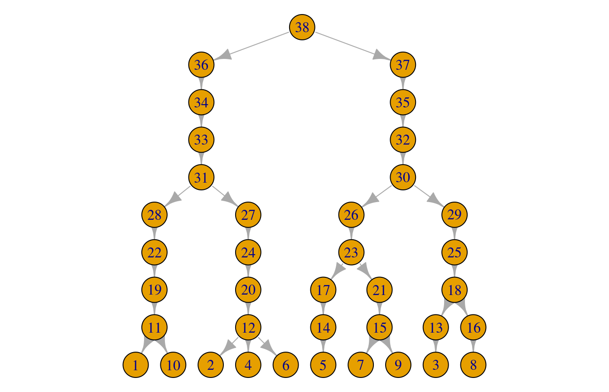
Let us verify the claim that the standard deviation in the number of male offspring per man is 1.10. The easiest way is to get information about father id’s, which is done by asking for a verbose_result:
N <- 10000
set.seed(1)
sim_res <- sample_geneology(population_size = N,
generations = 2,
extra_generations_full = 2,
enable_gamma_variance_extension = TRUE,
gamma_parameter_shape = dirichlet_alpha,
gamma_parameter_scale = 1/dirichlet_alpha,
progress = FALSE, verbose_result = TRUE)
tbl_fathers_with_children <- table(sim_res$father_pids[, 1])
tbl_fathers_no_children <- rep(0, N - length(tbl_fathers_with_children))
number_of_children <- c(tbl_fathers_with_children, tbl_fathers_no_children)
number_of_children <- as.numeric(number_of_children)
mean(number_of_children)## [1] 1sd(number_of_children)## [1] 1.08854Let os get estimates in parallel:
get_number_children <- function(N) {
sim_res <- sample_geneology(population_size = N,
generations = 2,
extra_generations_full = 2,
enable_gamma_variance_extension = TRUE,
gamma_parameter_shape = dirichlet_alpha,
gamma_parameter_scale = 1 / dirichlet_alpha,
progress = FALSE, verbose_result = TRUE)
tbl_fathers_with_children <- table(sim_res$father_pids[, 1])
tbl_fathers_no_children <- rep(0, N - length(tbl_fathers_with_children))
number_of_children <- c(tbl_fathers_with_children, tbl_fathers_no_children)
number_of_children <- as.numeric(number_of_children)
return(number_of_children)
}
library(parallel)
options(mc.cores = 2)
RNGkind("L'Ecuyer-CMRG") # for mclapply
set.seed(1)
x <- mclapply(1:100, function(i) get_number_children(100))
sds <- unlist(lapply(x, sd))
mean(sds)## [1] 1.100545Population growth can be simulated by specifying the population size at each generation by the population_sizes vector, where the length thus specifies the number of generations:
set.seed(1)
sim_res_growth <- sample_geneology_varying_size(population_sizes = c(10, 20, 10), extra_generations_full = 3, progress = FALSE)Note how extra_generations_full was used to obtain all individuals in the generations (and not just those with descendants in the last two):
pedigrees_growth <- build_pedigrees(sim_res_growth$population, progress = FALSE)plot(pedigrees_growth)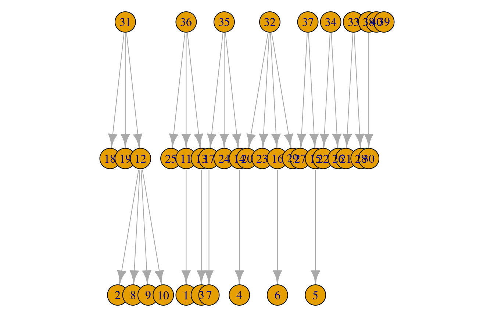